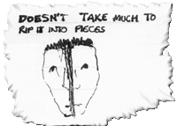
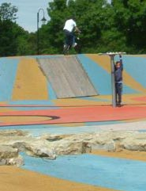
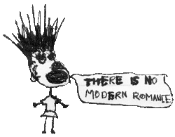

Zine
Zine v1
October 05
November 05
December 05
January 06
February 06
March 06
April 06
May 06
Media
Movies
Odds and Ends
Gallery
Old News
Really old news
Design Projects
Links
BMX family
Contact
23rd June
Apparently today is the happiest day of the year. I am pretty happy right now even though I am at work. I like this job and I've been here 6 months. Being inside isn't all bad, especially if you can go out in the evenings.
There are a lot more pictures in the gallery. Thanks everyone :).
Here is a french version of this website.
22nd June
I need some new shoes. I quite like these.
21st June
Free money!
20th June
Some pictures from the weekend.I think scrolling to look at pictures is better. I don't like having to click next to look at every picture but if you can scroll then ytou can stop when you see a good one. Its more sophistimacated.
Its the longest day tomorrow. Expecting rain.
19th June
Had a really good weeked thanks to Nigel, Tom, Pete, Rob, Chris A, Mark and Chris D. Wealden trails scene is getting pretty good. Nigel took some good pictures too. They are in his photo gallery thingy.
Also, lots of people will probably hate me for saying it, but I played football on Friday for the first time in years and it was actually quite fun. One of the best things is the violent tackles. The only bad thing was that I playing in socks and I trod in dogs mess and had to throw away my socks and cut off my trouses. Still I have a new pair of shorts now.
Wingham Trails is probably my favorite website these days. If you want space for hosting videos and stuff then let me know.
Back in the day.
17th June

Things I don't like about Parkour.1. They are always topless. No need.
2. Whenever they have done a trick they always carry on running afterwards like they are in a rush to get somewhere.
3. Flow, or lack thereof.
16th June
I made an interesting obsevation about the panel line up on Match of the day. Actually that's a lie, its not interesting. Stop reading now.
The panel and presenters on Match of the Day might change over the years, but the order they are in stays the same. Let me expalin. I remember in the old days when I was really into football (1996ish), the panel was Des Lynam (The presenter), Gary Lineker, Alan Hanson, etc. What you have is on the far left (our left) of the panel sits the presenter.
Then to the right of him is like his second in command, in the old days it was Lineker, but now Lineker has moved into the presenters chair, it has kind of shuffled along and these days it's Hanson. The person who sits in this chair is usually quite cheerful and positive and has been a presenter for a long time. Its second in importance to the presenter.
To the right of him is the next one down. This person is either a current/recent player/manager, or is grumpy or at least very critical. This used to be Alan Hanson's seat, but now he has moved up nearer the presenter then he has had to become more positive.
The person on the far right is "the kooky one". It used to be Jimmy Hill but now it's Ian Wright. They are a bit unconventional and say funny things. Not much good at saying stuff about the game but they are good for laughing at.
And so you can see that altough the people chnage over the years, the things they say and do are carefully planned, and you can not watch Match of the Day for 10 years and still know exactly what to expect.
I think too much thought has gone into this.
15th June
The there have been a few good entries for the competition. The gallery is getting a lot of views too which is good.
14th June
Is anyone doing anything interesting with bikes and woods on Saturday?
13th June
It's raining which is pretty good news for most people I think. Its awazing what can be done with a watering can and a broom.
I feel like getting fit this winter. I might try to do the beep test. As in finish it. Apparently only two people have ever done it - David Beckham and Lance Armstrong, although I heard that Dwight Yorke had dome it too. Sounds like a challenge.
Also I have been thinking about a BMX forum. A couple have been tried over the years but they never really work - the superbook failed too. I don't think it should be something to replace other guestbooks, but if you are organising a jam it would be easier to put all the details in one place for example. What do you think of the idea of a BMX/Trails forum?
9th June
i have just realised that all the links in this page are hidden. They get crossed out once they are clicked, but until then you can't see them. I have changed it so that the links are underlined, so you might want to read back all this page looking for links because there are at least two pages in there. Sorry!
Also, <- enter the competition!
7th June
This heat makes me really irritable. I wish it didn't but eveything is annyoing me even tiny little things. Plus everything around me is breaking (car, computer, mp3 player, bike, air compressor) so I am really irritable.
On top of that this office has to be one of the hottest in the world (no windows). Is anyone else spending the whole of the summer in an office? becasue I want someone to chat to on the book but the rest of the world seems to be outside enjoying themselves. drip drip drip. world cup blah.
6th June
The summer is going too quickly. Computers are boring. I wrote a review of Crowborough skatepark.
5th June
I went for a bike ride yesterday. Read all about it.
2nd June
Does anyone want to ride bikes tomorrow? Please click on Karen O, to leave a message

I went for a ride on Monday with Nigel and Tom and Pete and Rob. I took some photos, and Nigel took one too.
I have played around with My BMX Family a bit. The colors stay changed when you click them now (at the bottom), and a few other things have
changed. I still use it as my homepage, as it saves quite a bit of time.
Its june - no time for fancy internet updates. No time to ride my bike either so this thing is at the bottom of the list.
